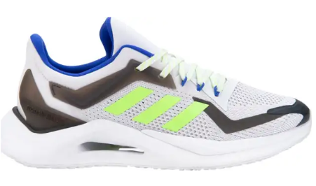
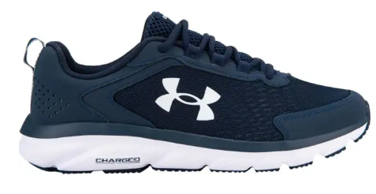
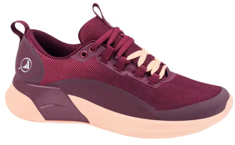
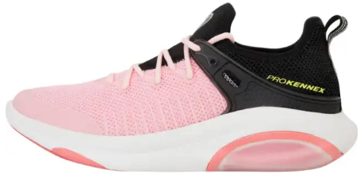
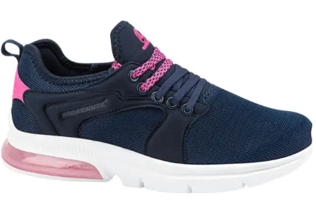

Los tenis son un calzado especial que se usa para practicar ciertos deportes; suele ser de material flexible, tener la suela de goma y llevar cordones.
A continuación estarán nuestros productos preferidos de nuestros clientes:
No. Imagen Tamaños Para 1  18 - 22 Caballero 2  20 - 24 Caballero 3  18 - 22 Dama 4  18 - 26.5 Dama 5  16 - 22 Dama